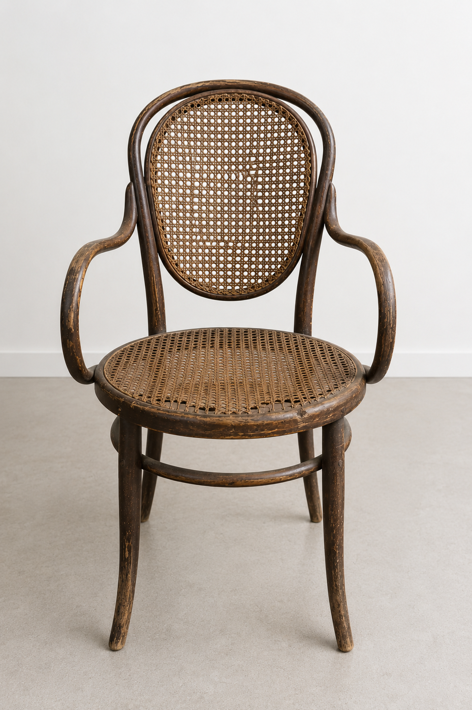
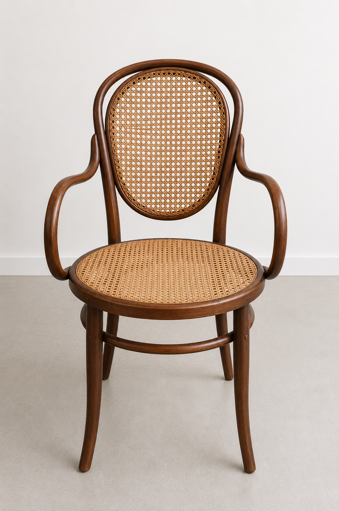
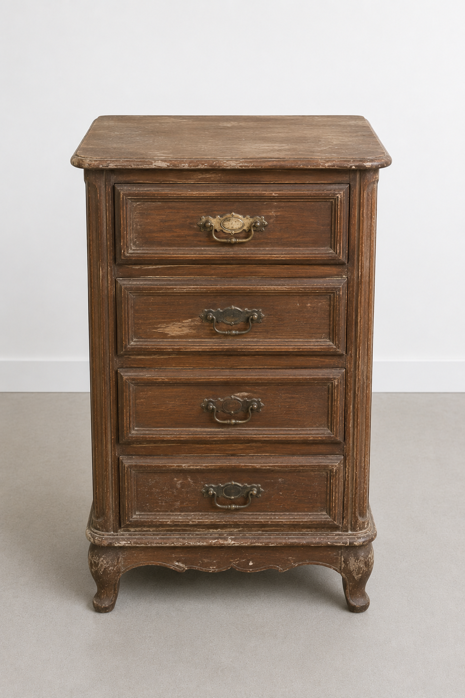
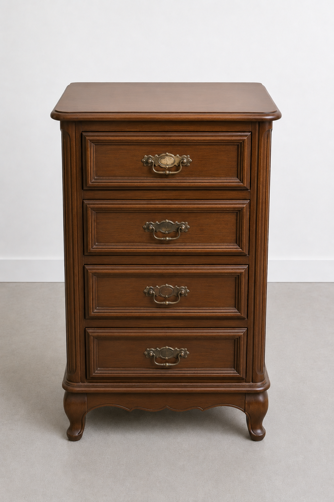
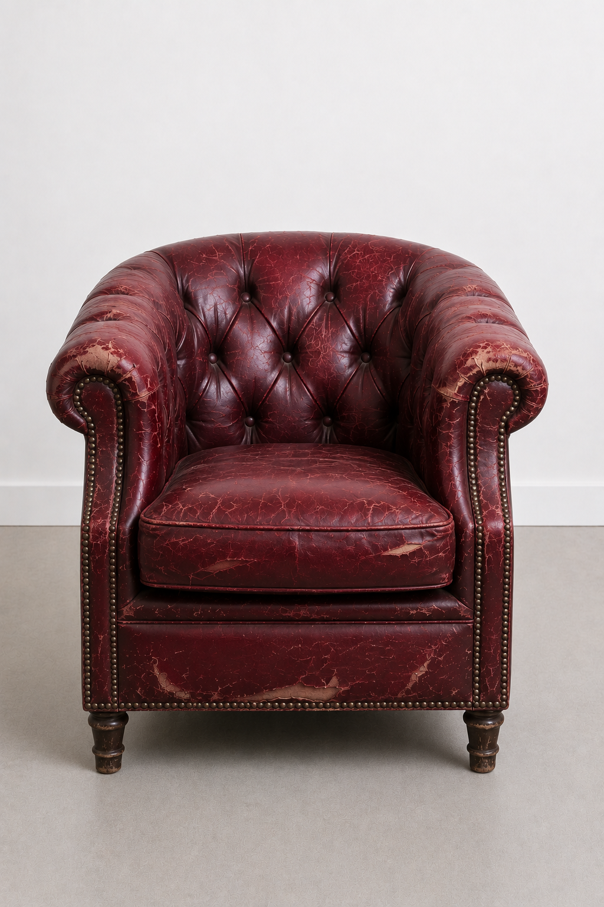
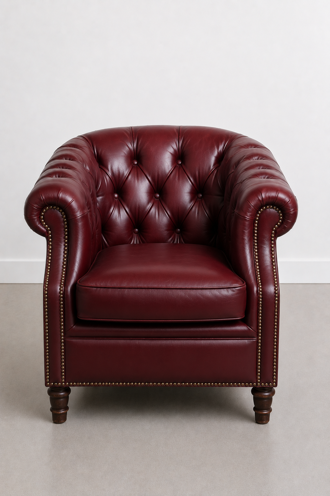

Técnica estructural y terminación para devolver vida a piezas con historia.
Diagnosticar daños estructurales
Leer una pieza, identificar sus problemas y planificar la intervención antes de tocarla.
Diseñar nuevas terminaciones
Criterio cromático y técnica aplicada para que cada pieza cierre con identidad propia.
Crear piezas contemporáneas
Intervenir con criterio para que lo antiguo conviva con espacios y usos actuales.
— Cómo trabajamos
El proceso
01
Diagnosticar
Leer la pieza en su estado real: uniones, materiales, daños estructurales y potencial oculto.
02
Desarmar y reparar
Desarticular y documentar cada pieza, resolver encolados, refuerzos y reemplazos.
03
Reconstruir y diseñar
Ensamblar la estructura y definir la dirección estética: terminación, color e identidad propia.
04
Terminación
Aplicar aceites, barnices o lacas con técnica de oficio para un resultado duradero.
— Casos reales
Antes y después
El resultado de aplicar el proceso completo, pieza por pieza. Trabajos de alumnos, de diagnóstico a terminación.


ANTESDESPUÉS
Silla Thonet - Martín, grupo 2025


ANTESDESPUÉS
Mesa de luz clásica - Mariana, grupo 2025


ANTESDESPUÉS
Sillón capitoné - Federico, grupo 2025
— Alumnos
Testimonios de alumnosque ya pasaron por nuestro taller
— Programa del curso
Programa del curso
Ocho semanas divididas en cuatro módulos. Cada etapa te acerca un paso más a tu propia pieza restaurada.
01Diagnóstico y lectura de la pieza
Aprendé a leer un mueble antes de intervenirlo: identificación de maderas, uniones, daños estructurales y decisiones de proyecto.
02Desarme y reparación estructural
Desarmado con criterio, encolados, refuerzos y reemplazos de piezas dañadas para devolverle estabilidad al mueble.
03Reconstrucción y diseño
Reensamblado de la estructura y definición de la dirección estética: color, terminación e identidad de la pieza.
04Terminación y proyecto final
Aceites, barnices y lacas aplicados con técnica de oficio. Te llevás tu propia pieza terminada, documentada de principio a fin.
Sobre el curso
Antes de empezar
Estas son las dudas que más se repiten sobre la cursada, la modalidad y el proyecto final que te llevás terminado.
No. El primer módulo cubre herramientas, materiales y lectura del mueble antes de tocar madera. Si ya restauraste antes, vas a avanzar más rápido en las etapas iniciales, pero no es un requisito para anotarte.
Son 8 semanas divididas en 4 módulos, uno por cada etapa del proceso: diagnosticar, desarmar y reparar, reconstruir y diseñar, y terminación. Cada módulo combina clase práctica en taller con trabajo sobre tu propia pieza.
No. El taller provee todas las herramientas y la mayoría de los materiales de base. Si querés traer las tuyas para familiarizarte con tu propio equipo, también podés.
Vos elegís la pieza al inscribirte, con nuestro visto bueno según su complejidad. Va a ser tu proyecto final: pasa por las cuatro etapas del proceso y te la llevás terminada al finalizar el curso.
Todo el cursado es presencial en nuestro taller. Es un curso de trabajo manual sobre pieza real, así que no tiene modalidad virtual.
Sí, entregamos certificado de finalización una vez completado el proyecto final. Además, tu pieza terminada queda documentada en fotos de antes y después para que la sumes a tu portfolio.